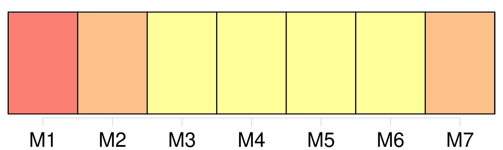

Longueur nb maillons : 24 mentions |
 |
Il parla de la sapinière voisine où l'espace était grand, où il y avait un ruisseau dans lequel on pouvait se baigner et [un étang] dans [lequel] on pouvait pêcher. Douce ne demandait pas mieux que de se baigner dans le ruisseau et que pêcher dans [l'étang] , mais pour cela il fallait sortir du verger, et son grand-père le lui défendait sévèrement, quoique la barrière fût fermée d'un solide cadenas dont il gardait la clé. [25 phrases] À l'heure de midi, assis au bord de [l'étang] , les provisions posées sur l'herbe, ils faisaient trois parts. [84 phrases]
Et c'est ainsi qu'il pouvait apprendre à sa petite camarade que sa mère était morte en la mettant au monde et que son père, fou de chagrin, s'était sauvé de la maison pour aller se noyer dans [l'étang de la sapinière] [58 phrases] Du pain, du fromage et quelques fruits, et tous deux, oubliant le mauvais temps du matin, sautèrent une fois de plus la grille et s'en allèrent vers [l'étang] [Il] était à pleins bords, aujourd'hui, et seuls les grands roseaux des rives se montraient au-dessus de l'eau. Jamais Douce ne [l'] avait vu si plein, et tout de suite elle pensa qu' [il] devait être ainsi le jour où son père s' [y] était noyé. [142 phrases] Assise bien à l'aise sur un tas de fougères sèches, elle cousait ou tricotait tandis qu'ils jouaient ou pêchaient dans [l'étang] [28 phrases] Il en était de même pour [l'étang] autour [duquel] ils s'amusaient à courir. [16 phrases]
Une après-midi que le père s'attardait à regarder les deux enfants au milieu de [l'étang] , Noël lui cria : [90 phrases] Elle l'aperçoit enfin, il vient de la direction de [l'étang] [11 phrases]
C'est Églantine qui parle la première : [1 phrases]
Et Noël ajoute aussitôt : [11 phrases]
Il la prend, cette main, et la garde dans la sienne pendant qu'il dit encore :
N' [y] viendrez -vous pas, Églantine? [10 phrases]
Mais elle n'oublia pas de dire que Noël irait tous les dimanches pêcher dans [l'étang] [2 phrases] Oui, elle irait à [l'étang] [24 phrases] Noël, ainsi qu'il l'avait dit, allait pêcher dans [l'étang] tous les dimanches. [2 phrases]
Les jeunes gens reprenaient l'habitude de se baigner dans [l'étang] , tout comme ils avaient repris leur tutoiement familier, et mère Clarisse ses chansons. |

|
Il est possible de télécharger la ressource sur la page Ortolang |
Si vous avez des questions ou vous voyez des erreurs, merci d'envoyer un mail à silvia.federzoni89@gmail.com |